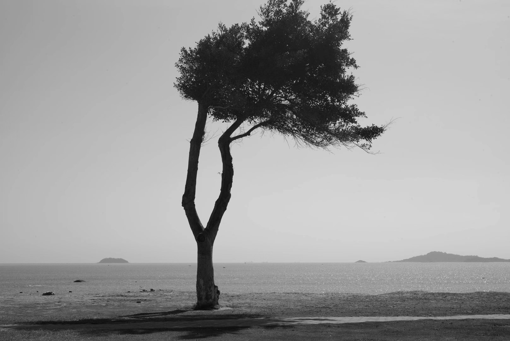

OBSERVE. FOCUS. ENTER.
Moments, held.Stories, in motion.
An archive of light, gesture and time.
Turn the dial. Follow a sequence.

150,000 SHOTS
Documentary feature · Montage
Your roll00 / 12
A personal sequence.
A moment to return to.
Press the shutter to keep a photograph or film on your roll.
01 / PHOTOGRAPHIC SERIES
In the same light.
Curated by tone, setting and visual rhythm.
Choose a roll. Let the eye settle.
Quiet Horizons
Monochrome · Soft greyCoastlines, distant hills and open skies, held together by space and soft greys.
02 / MOTION PICTURES
Time, in the frame.
Preview a moment. Play the sequence.
Open a work to watch with sound.
150,000 SHOTS / A DOCUMENTARY BY XIAOBO HE
A life behind the lens,
in the making.
In a photography school in Guangzhou, young photographers learn to shape light, compose a frame and find a voice. The film follows the ambitions and uncertainties of a creative life taking form.
03 / FESTIVAL CIRCUIT
A film on its journey.
Five festival records for 150,000 SHOTS.
Awards, nominations and finalist selections.
150,000 SHOTS
DOCUMENTARY / 2024 / 103′26″
A FILM BY XIAOBO HE